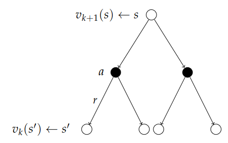
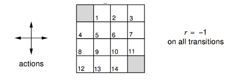
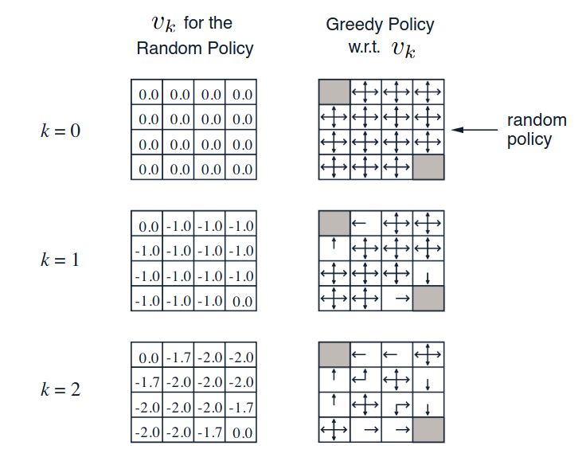
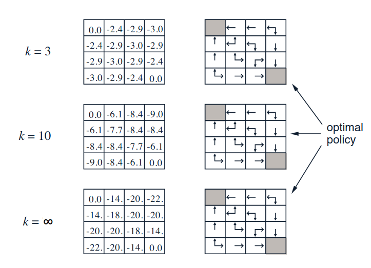
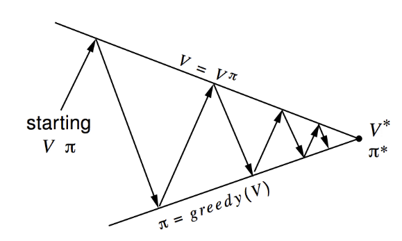
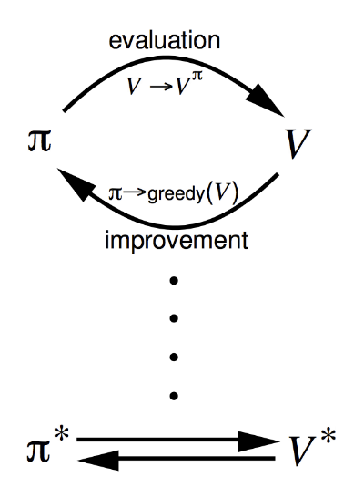

Introduction to Reinforcement Learning
3 - Planning by Dynamic Programming
Introduction
So far we have looked at how to formalize he problem, but now (and for the rest
the course), we will look at how to solve the problem i.e. how to build the agent.
The most fundamental way to solve this (and also things like optimal control theory),
is by dynamic programming and planning with dynamic programming.
Dynamic Programming (DP from now on) can be applied to three fundamental paradigms:
- Policy Evaluation: someone give you a policy - how good is it?
- Policy Iteration: once we know evaluation, we can search for policies
- Value Iteration: this works on the value function, not in policy space
We will mention some extensions which will be expanded in other presentations.
So why do we talk about dynamic programming? Dynamic means there is a sequential or temporal
component to the problem. Programming is meant in the mathematical sense, which in RL terms
refers to the policy.
DP is a method for solving complex problems by breaking it down into subproblems. We solve
each of them, then we combine the solutions.
DP is a very general solution method for problems which have two properties:
- Optimal substructure: when finding the shortest distance from A to B, we can first
try to find the shortest distance to some midpoint C, then solve AC and BC.
- Overlapping subproblem: the subproblems recur many time. Shortest distance
from some other point to B can involve going to the same midpoint C as earlier
from where we know the optimal solution to B. We can cache solutions and reuse them.
MDPs satisfy both properties: Bellman gives the recursive decomposition. The "cache" is
stored in the value function! It stores and reuses solutions. This is why value functions
are so central and important in RL.
DP assumes full knowledge of the MDP. It is used for
planning in an MDP.
- For prediction the input is and MDP ⟨𝓢, 𝓐, 𝓟, 𝓡, 𝛾⟩ and a policy π. Can also be a MRP.
The output is the value function $v_\pi$. Someone gives us the MDP and the policy,
how much reward do we get?
- For control - the full optimization where we try to figure out the best thing to
do in the MDP. We are given the MDP ⟨𝓢, 𝓐, 𝓟, 𝓡, 𝛾⟩, but instead of giving us
a policy, our goal is to find the best policy, or the optimal value function $v_*$
and also the optimal policy $\pi_*$.
Policy Evaluation
Problem: we want to evaluate some given policy π.
Solution: iterative application of Bellman expectation backup.
We saw two different Bellman equations. We use the expectation variant to evaluate a policy.
Then we use the optimality variant to do control. The general approach is to do iterations
on the Bellman equation to find some solution. (This is not the only method that can be used).
We start with some arbitrary v
1 with an initial value which e.g. gives no reward.
After one step we find a new value function v
2, and eventually we find the true
value function.
v
1→v
2→...→v
π
We start by using synchronous backups (considering all states in every step):
- At each iteration k + 1
- We sweep all states s∈𝓢
- We update the value function vk+1(s) from vk(s')
- where s' is a successor state of s
We will discuss asynchronous backups later. Convergence to v
π will be proven at
the end of the lecture.
So what is the update exactly?

We take the Bellman expectation equation, since we calculate an expectation over our actions
rather than trying to find the best one with a max().
Intuitively, we can think of this as a one-step look-ahead. We want to calculate the value
of the root node in the tree. From the root we consider all actions we can take, and all
the states we might end up with (after environment acts). We consider the values in all
the successor states, we backup and do a weighted sum of all values which gives us
the value function of the root node.
In DP we will turn the Bellman equation into an iterative update:
$$
v_{k+1} = \sum_{a\in\mc{A}}\pi(a\mid s)\Big(\mc{R}_s^a + \gamma\sum_{s'\in\mc{S}}\mc{P}_{ss'}^a v_k(s') \Big)
$$
Vector form:
$$
\bs{v}^{k+1} = \bs{\mc{R}}^{\bs{\pi}} + \gamma\bs{\mc{P}}^{\bs{\pi}}\bs{v}^k
$$
In the iteration, we simply plug in all the values from the previous states in order to
calculate the new value in the current state.
A concrete example:

We have a small 4x4 grid-world. The shaded corners are terminal nodes with no reward.
We can choose 4 actions (N, S, E, W). We can't go off the grid. Each step gives a
reward of -1. When we get to a terminal node, we stop getting negative rewards, so
there is an incentive to end as quickly as possible. We want to find out - on average -
how fast we can get to a terminal node.
Agent follows the uniform random policy:
$$
\pi(n\mid\cdot) = \pi(e\mid\cdot) = \pi(s\mid\cdot) = \pi(w\mid\cdot) = 0.25
$$
On the left are the values from the value function after the first 3 iterations, when
we initialize everything with 0:

When k=1 we have the naive estimates. We apply one step of iterative policy valuation
and apply the Bellman expectation equation and end up in k+1 step. If we start in
node 6 for instance, we see that no matter where we go, we get a negative reward of -1,
with probability 0.25. The weighted average is 0.25(-1-1-1-1) = -1. We get the same
result everywhere except in the terminal states, where we get 0.
We iterate into k=2. From node 6, we get the same results again, but now we also get the
-1 value in each successor state. After the update, we now have a value of -2. In node 1
we get - for {e,s,w} we get (1/4){-1-1-1+0} = -3/4 = -0.75 plus the negative one from
where we start, which gives a value of -1.75 (the 5 doesn't fit in the chart).
Continuing:

Eventually the iteration converges. Which leads us to the right hand column. We want to pick
actions according to the values in the grid. In the beginning, k=0, we are indifferent to
actions, so we get a random policy. After the first iteration, things change. From node 2,
we get a preference: we want to move to the west. After k=2 the best actions is more fine tunes.
After just 3 iterations, we actually get the optimal policy. The take-away: the value function
allows us to improve our policy.
Policy Iteration
So, if we have several policies, how do we find the best one? Or how do make a policy better?
Given a policy π, how can we find a policy that is better? We break it down into two steps.
First we
evaluate the policy π, which means we use the policy the calculate the value
function:
$$
v_\pi(s) = E[R_{t+1} + \gamma R_{t+2} + \ldots\mid S_t = s]
$$
which tells us the average reward in some state. Then, we
improve it by acting
greedily wrt v
π:
$$
\pi' = \text{greedy}(v_\pi)
$$
where greedy means we look at all possible future states and pick the one with the smallest
value function. Like we did the example: in the small gridworld, the improved policy was
optimal: π' = π
*. In general, we need more iterations of improvement/evaluation,
and eventually we will see that this process of
policy iteration always converges to
π
*.
Here are some visualizations that we will return to frequently during the lectures.
We start with some arbitraty inputs for the initial value function, e.g. all 0s,
and some policy. On the upward pointing arrows, we do policy evaluation, and on
the downward pointing arrows, we do policy improvement.

We start by calculating the values for our first policy, and move up the first arrow.
With the values calculated, we select a greedy policy to improve it, and move down
the second arrow. Then we evaluate the value-function for the new policy, and select
a second policy with the greedy approach etc. Repeat until convergence.
We will see how we can add in more components to make this more sophisticated. As we saw,
we can use iterative policy for the up-arrows, and policy improvement for the down-arrows.
(Second image was not discussed):

To make things a little clearer, let us consider a deterministic policy: a = π(s).
(After one step of selecting a greedy policy, it will be determinstic). How do make
a better policy? We act greedily, which we can define as:
$$
\pi'(s) = \underset{a\in\mc{A}}{\text{argmax}}\; q_\pi(s, a)
$$
So we look at the value of being in a state s, we take a particular action a and then
following the policy after that. That's the action-value. We want to pick the actions
that gives us the highest action-values. Recall that q is the immediate reward plus
the state-value of the state we end up in (following action a).
This improves the value from any state s over one step:
$$
q_\pi(s, \pi'(s)) = \max_{a\in\mc{A}} q_\pi(s, a) \geq q_\pi(s, \pi(s)) = v_\pi(s)
$$
If we act greedily, the greedy policy will at least improve the policy, due to the
inequality demonstrated above. Note that we use π' in one step, and regular π afterwards.
We can iterate and use a telescoping argument. We will eventually improve the value function,
$v_{\pi'}(s)\geq v_\pi(s)$:
$$
\begin{align*}
v_\pi(s) &\leq q_\pi(s,\pi'(s)) = E_{\pi'}[R_{t+1} + \gamma v_\pi(S_{t+1})\mid S_t = s] \\
&\\
&\leq E_{\pi'}[R_{t+1} + \gamma q_\pi(S_{t+1}, \pi'(S_{t+1}))\mid S_t = s] \\
&\\
&\leq E_{\pi'}[R_{t+1} + \gamma R_{t+2} + \gamma^2 q_\pi(S_{t+2}, \pi'(S_{t+2}))\mid S_t = s] \\
&\\
&\leq E_{\pi'}[R_{t+1} + \gamma R_{t+2} + \ldots\mid S_t = s] = v_{\pi'}(s)
\end{align*}
$$
It is better for one step, is improved by two steps etc. to all future steps.
Will this action take us to the optimal value? Well, what happens if improvement stops.
$$
q_\pi(s,\pi'(s)) = \max{a\in\mc{A}}q_\pi(s, a) 0 q_\pi(s,\pi(s)) = v_\pi(s)
$$
In this case, we have actually satisfied the Bellman optimality equation:
$$
v_\pi(s) = \max_{a\in\mc{A}}q_\pi(s, a),
$$
which means we have found the optimal values! When this has happened:
$$
v_\pi(s) = v_*(s),\quad\forall s\in\mc{S},
$$
the policy π is the optimal policy.
As we saw in the simple example earlier, we had actually found the optimal policy
after just 3 iterations. This raises the question: does the policy evaluation need
to converge? Or should we introduce a stopping condition? (Such as ε-convergence
of value function - so when the value functions are updated by a small value, we stop.)
Or shold we simply stop after k iterations of iterative policy evaluation? The extreme
version of this is stopping after 1 iteration, which is
value iteration. This
is the most popular way to use DP and will be covered in the next section.